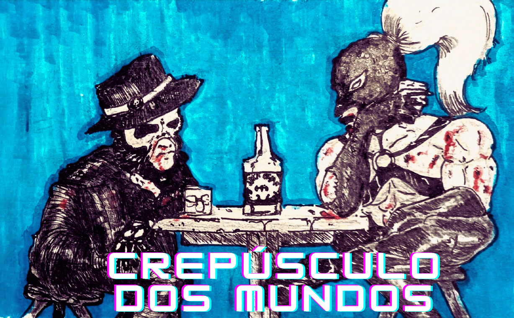

Em um cenário de turbulência e incerteza, estes super-heróis lutam para preservar a esperança em meio ao caos. Munidos de algumas habilidades especiais e seu senso de dever, eles enfrentam as mais diversas ameaças: vilões perigosos, desastres naturais, crises existenciais ou a restrição da liberdade criativa e da capacidade de contar histórias autênticas imposta pela agenda woke.
Crepúsculo dos Mundos #1
- Título: Disrupção Temporal
- Edição #1
- Roteiro e Arte por Ívano Fontes
- Capa por LuzIA
- 22 páginas